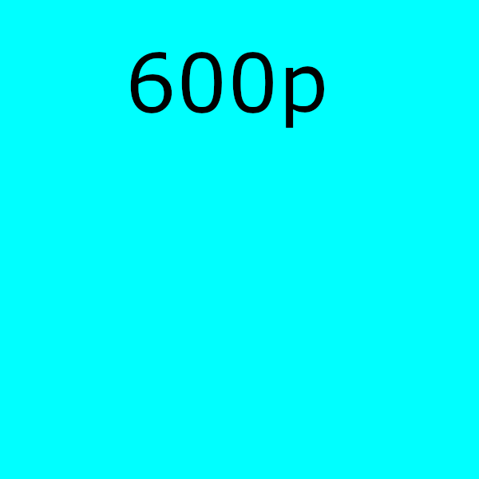

Simple stuff
God, I can't wait to get past this boilerplate.

Some formatting
Press a to do nothing.Nice?
The time this line is being written is
HTML quotes work like
intended
for short quotations that don't require paragraph breaks.
Though you still need to
link
separately because the world is confusing.
Some non-semantic wrappers (discouraged)
[Editor's note: At this point in the play, the lights should be down low].
Links
Haha even block-level elements can be links.
Firefox is developed by the Mozilla Foundation. Send email to nowhere